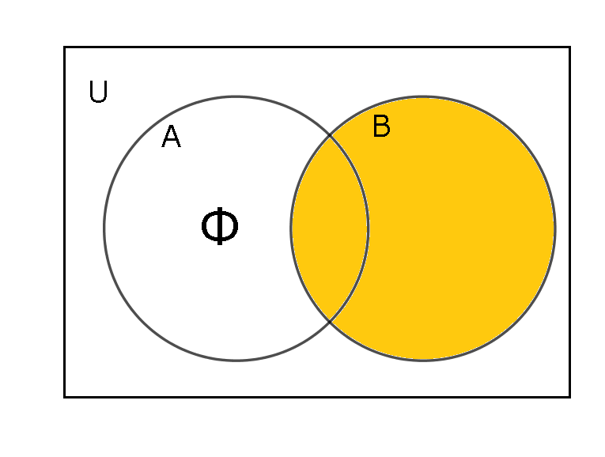
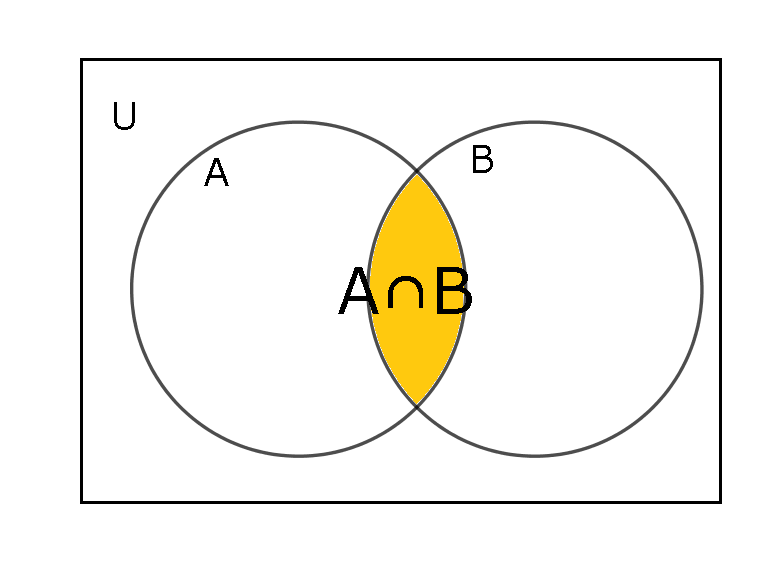
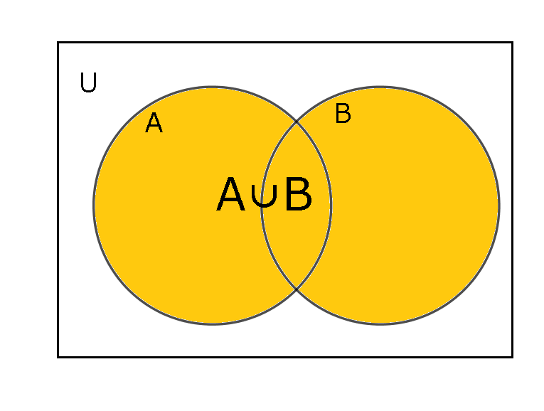
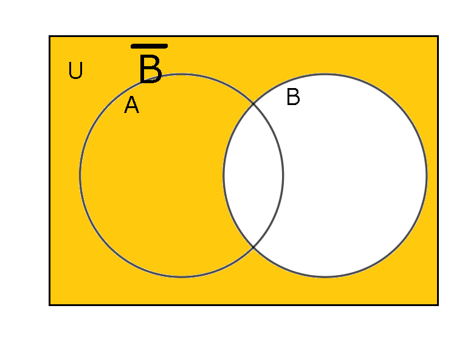

- 集合と要素
:集合とは要素(元)の集まり。例えば、要素xが集合Aに属することを\(x\in A\)と表す。
- 空集合
:要素を一つも持たない集合。Φで表す。
ここからは、異なる2つの集合A,Bを定めるとする。
- 部分集合
:ある集合Aの要素のすべてが集合Bの要素であること。\(A \subset B\)と表す。(つまり、(集合Aと集合Bの補集合(集合Bでないということ)の共通部分が空集合)：(\(A \cap B^c = Φ\))になっているということ。)
- 共通部分(積集合)
：ある集合Aと集合Bのどちらにも共通する要素全体の集合。\(A \cap B\)と表す。
- 和集合
：ある集合Aと集合Bの少なくともどちらか一方に属する要素全体の集合。\(A \cup B\)と表す。
- 補集合と普遍(全体)集合
：ある考察対象全体を普遍集合または全体集合と呼び、考える対象の全てを部分集合に含むものとする。また、補集合とはある集合でないもの全体の集合である。例えば、ある集合Aの補集合は\(\overline{A}\)や\(A^c\)で表す。（集合Bと集合Bの補集合は共通部分が空集合。そしてそれらの和集合は全体集合Uに一致する。つまり、\(B \cap\ B^c = Φ \), \(B \cup\ B^c = U\)
- ド・モルガン則
\((A \cap B)^c = A^c \cup B^c\)
\((A \cup B)^c = A^c \cap B^c\)
つまり、「AとBの(共通部分)の否定」は「A'とB'の(和集合)」になるという規則のこと。(共通部分)↔(和集合)で互いにもう一方の式になる。成り立つことをベン図から確認できる。
- 集合の演算法則
交換法則、結合法則、分配法則が成り立つ。
- 交換法則
\(A \cap B\)=\(B \cap A\)
\(A \cup B = B \cup A\)
- 結合法則
\((A \cap B) \cap C\)
\(= (A \cap (B \cap C)\)
\((A \cup B) \cup C\)
\(= A \cup (B \cup C)\)
- 分配法則
\(A \cap(B \cup C)\)
\(= (A \cap B) \cup(A \cap C)\)
\(A \cup(B \cap C)\)
\(= A \cup B) \cap (A \cup C)\)